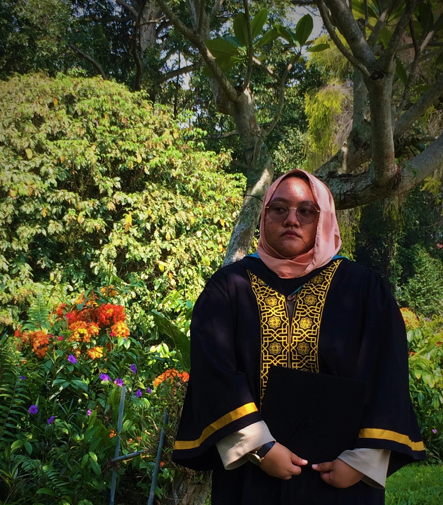

MUSTAQIMAH NAIM BINTI AB AZIZ
1-3D, BLOCK B, FLAT SRI SARAWAK, JALAN KENANGA,
55200 KUALA LUMPUR
011 2843 6473
mustaqimah.aziz@gmail.com
Punctuality, Committed, Honesty, Enthusiastic, Loyalty, Cooperativeness
I am seeking a position as an intern in your organization
to utilize my knowledge in Information System and gain additional
skills and experience.
Bachelor in Information System (Present)
International Islamic University Malaysia (IIUM)
CGPA: 3.17/4
Diploma in Islamic Banking and Finance (2016)
International Islamic College (IIC)
CGPA: 3.7/4
Smk Seri Bintang Selatan
2A(Bahasa Malaysia, Mathematics), 2B, 3C, 2D
Committee Technopreneur - 2017
Vice President of Islamic Banking and
Finance Apprentice Society(IIC) - 2016
Captain of Softball Club - 2013
Microsoft Office - Word, Powerpoint, Excel
Programming Language - SQL, JAVA, C++, HTML
Accounting, Economics, Computer Networking, Database